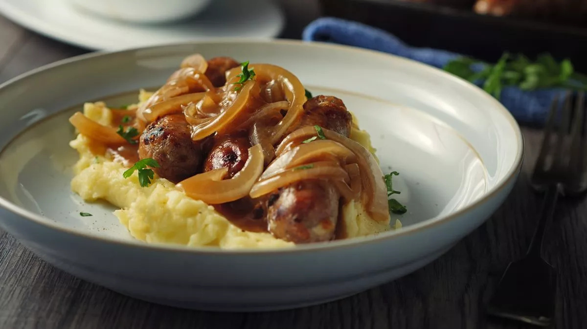

приготовление:
-
Почистить картофель, поставить вариться, посолив, до готовности.
-
Если готовить свиные колбаски, то сначала поставить духовку греться на 160 градусов. Пока она нагревается, обжарить колбаски на сковороде (проткнув предварительно в паре мест зубочисткой) с оливковым маслом, чесноком (придавить просто 2 зубчика) и розмарином пару минут для подрумянивания. Добавить пару кусочков сливочного масла, полить колбаски расплавившимся маслом со специями. Переложить в форму для запекания и отправить в духовку на минут 15.
-
Для лукового соуса почистить 2 красных луковицы, порезать на полукольца тонко. Поставить жарить на сковороду, смазанную оливковым маслом. Помешивая, жарить минут 5. Добавить 2 ч.л. сахара, щепотку соли, пару кусочков сливочного масла и помешать. Плиту включить почти на максимум, добавить 1,5–2 ст.л. бальзамического уксуса, 1,5–2 ст.л. вустерширского соуса, оставить карамелизоваться, помешивая пару минут. Влить 100–150 мл говяжьего бульона, чтобы почти покрыло лук, уменьшить огонь до среднего и готовить еще минут 10.
-
Когда картофель сварился, слить полностью, оставить в той же кастрюле НА ОГНЕ (среднем). Помять его прямо в кастрюле, продолжать помешивать, влить 1 ст.л. оливкового масла, помешать еще минуту, посолить копченой солью, добавить 1 ч.л. зернистой горчицы и порезать мелко жменьку шнитт-лука. Всё перемешать — готово.
-
Сервировка: вниз положить слой пюре, наверх колбаски и сверху луковый соус.